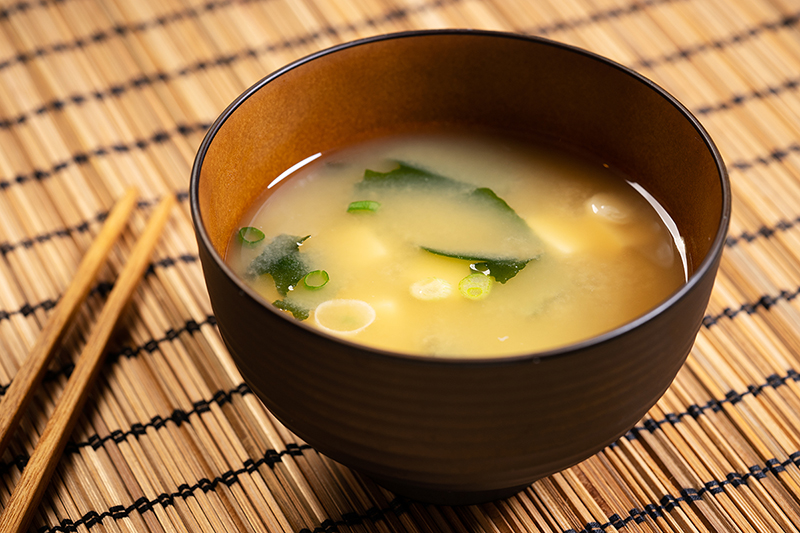

Miso Soup

Description
Make your own Japanese miso soup from scratch.
It's easy to do at home! Perfect for an appetizer
or light, warming lunch.
Ingredients
- 1 tablespoon finely chopped wakame
- 4 cups water
- 2 teaspoons dashi granules
- 3 tablespoons miso paste
- 4 ounces silken tofu, cubed
- 2 green onions, sliced on the bias
Directions
- Place wakame in a fine-mesh sieve and soak in
some cold water for 10 minutes.
- Combine 4 cups water and dashi granules in a
saucepan and bring to boil over medium heat. Add
miso paste and whisk to dissolve. Add wakame and
simmer for 3 minutes.
- Divide tofu between 4 serving bowls. Ladle miso
soup on top of garnish with green onions.